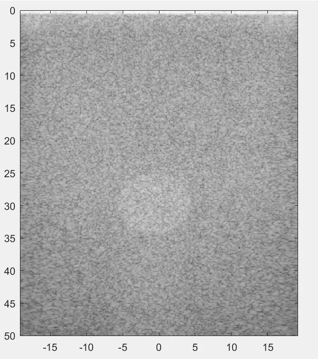
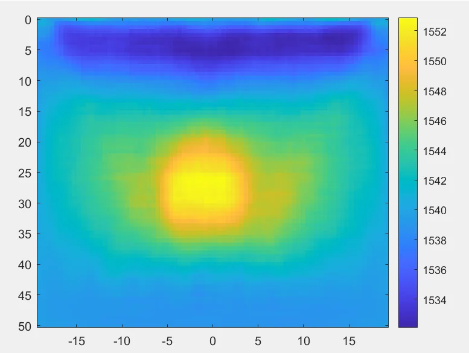
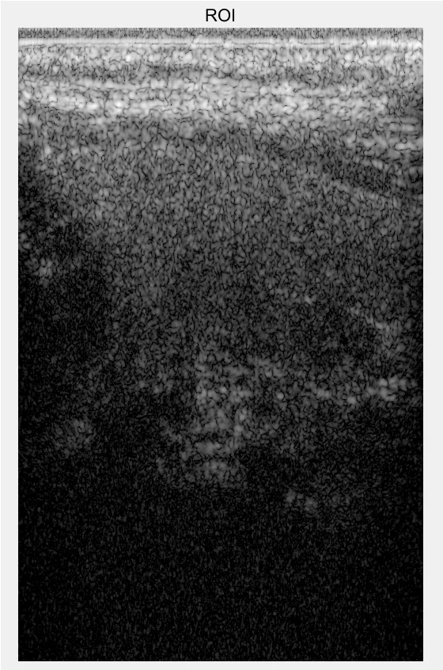
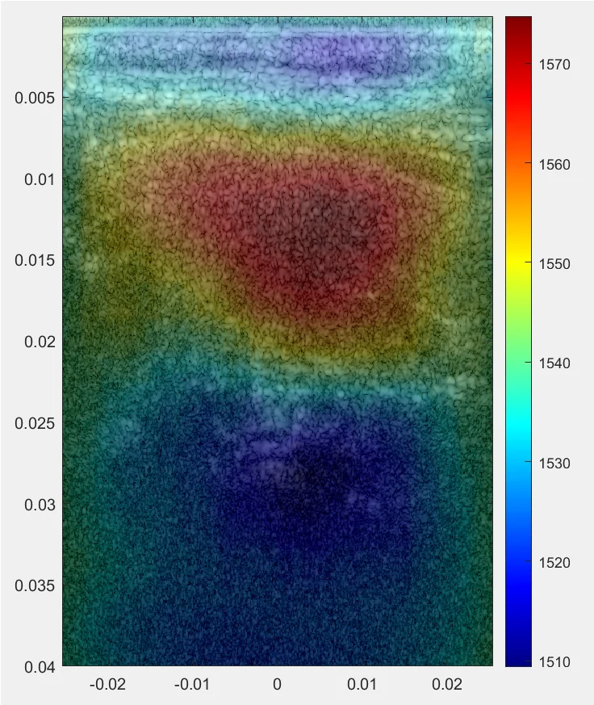
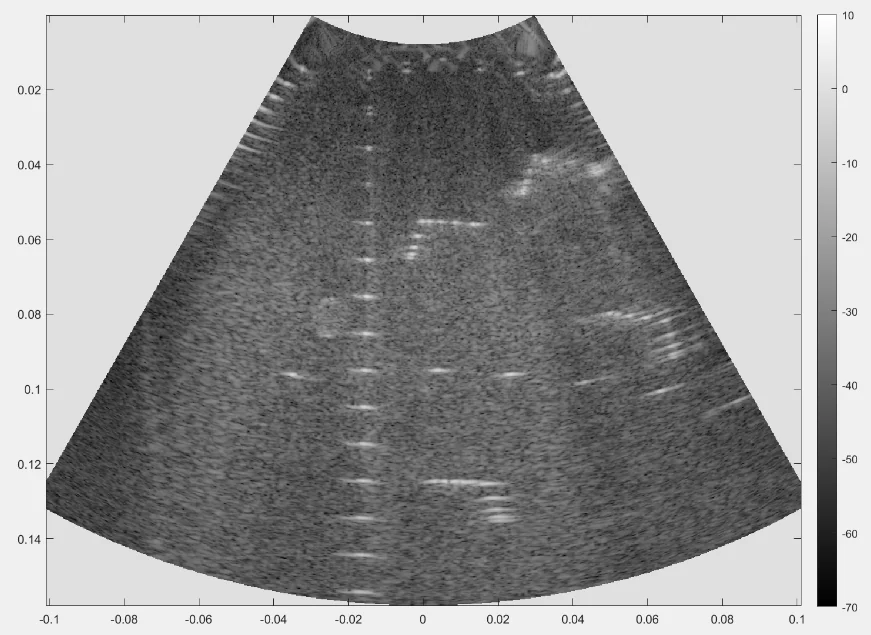
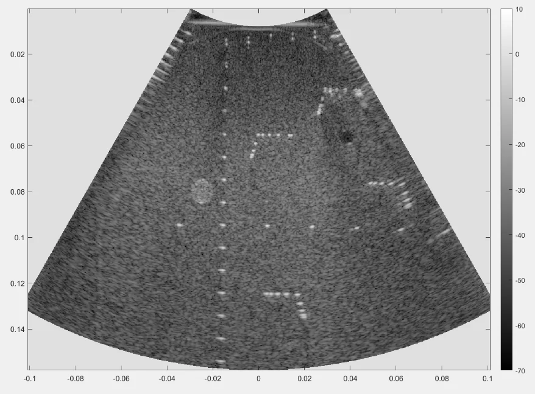
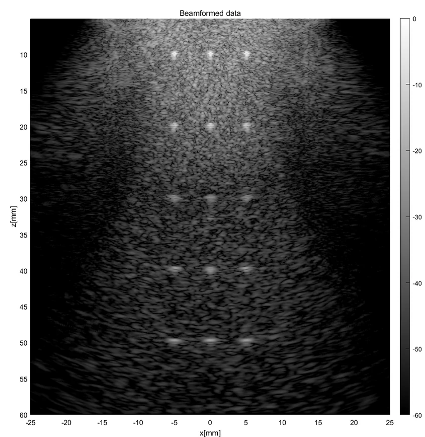
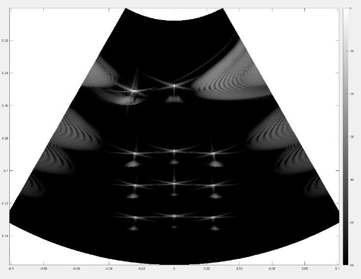

Sound of Speed Imaging and Correction
Imaging and correcting the speed of sound in tissue with a hand-held ultrasound device. The local speed-of-sound distribution is reconstructed from echo data and used to correct the time of flight, yielding sharp, correctly focused B-mode images. Demonstrated on phantom and carotid scans, and validated end-to-end with the k-wave and Field II simulation pipelines across different beamformers and front-ends.
Phantom


Carotid


Can this speed of sound be used to correct the time of flight? Of course!
Different Beamformers and Front-Ends
Full imaging capability across different beamformers and front-ends.


k-wave and Field II Simulation
Whole-process simulation pipeline with k-wave and Field II.

